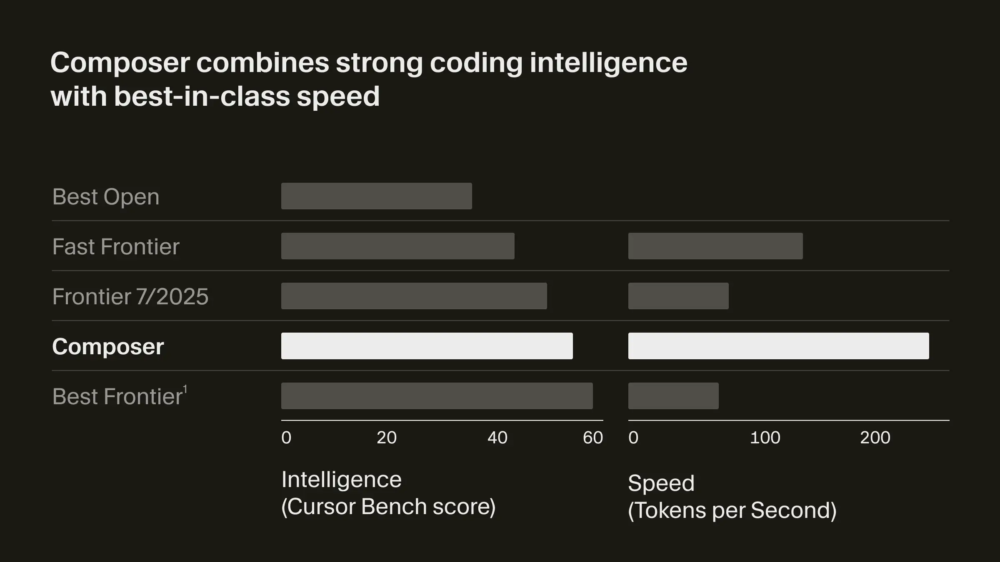
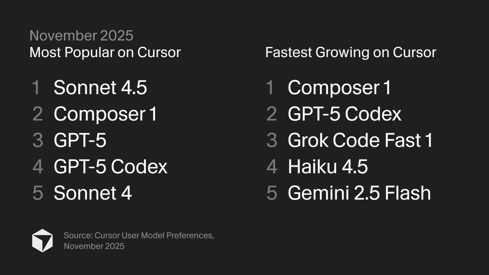
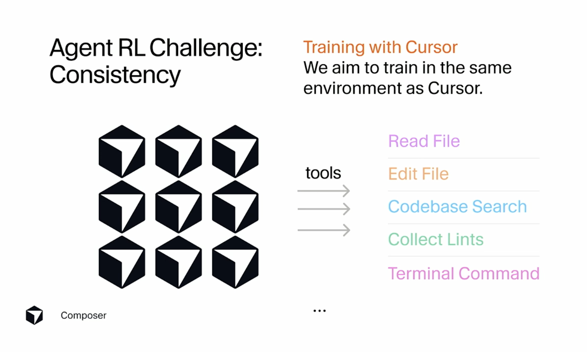
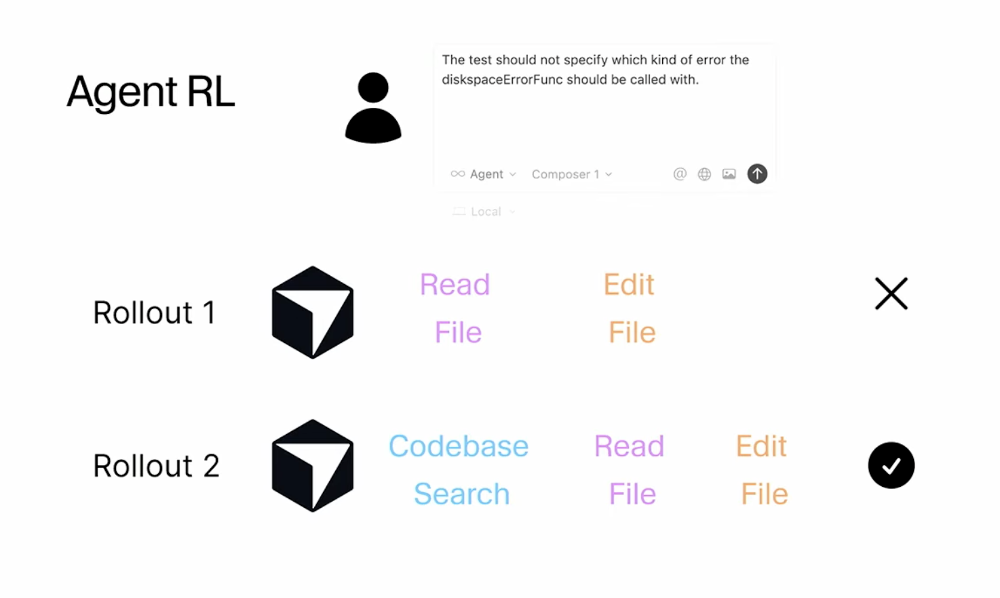
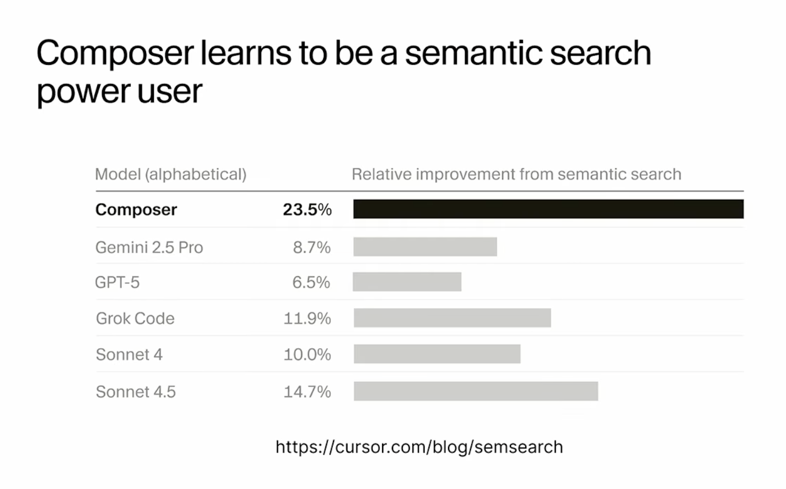

Composer-1 is the model of the year
Cursor’s Composer-1 model is my favorite model release of the year. It’s dramatically changed my development workflow—and it changed my mind about specialized models.
The benchmarks that Composer-1 published upon release focused on intelligence and speed:
In other words, Composer-1’s output is roughly as good as the frontier models (say, GPT-5 or Claude Sonnet 4.5), but it generates that output significantly faster.
After switching from GPT-5 to Composer-1 in Cursor, I immediately noticed a marked speed improvement. Composer-1 felt about 4x faster than GPT-5. Previously, I’d expect to wait around 30 seconds for GPT-5 to complete significant changes to a repository, whereas Composer-1 rarely took more than 7 or 8 seconds.
This is obviously a better user experience, but I noticed other effects of using a dramatically faster coding agent:
- I’m more willing to make the marginal change to a codebase. Since the time cost of any given change is lower, I’m likelier to make more changes. This means sending the extra prompt to give a feature a final_final_v4_final round of polish.
- I’m more likely to stay in flow while building a feature. Previously, I might check email or do something else while waiting for the Cursor agent—causing a context switch and losing momentum. Now, there’s almost no time to do anything else, and it’s fascinating to watch the model work blazingly fast.
- The context window in the agent chat tends to fill up more quickly. I’m making more changes over a longer, focused session with the agent (with a smaller context window). Composer-1’s context window is 200k tokens, which isn’t bad, but GPT-5’s was 400k tokens and other models offer 1M token windows. This sometimes forces me to restart a chat deep into a conversation, requiring the agent to get back up to speed on the state of the codebase.
Composer-1 appears to be a hit with Cursor users, as it’s now the fastest-growing model on the platform (via X):
The success of Composer-1 changed my mind about startups developing their own specialized models.
I had heard investors and founders predict that startups would begin building specialized models and use them instead of the general-purpose LLMs from companies like OpenAI and Anthropic.
I wasn’t so sure about this, because (a) training an effective model that can rival the performance of a frontier model typically requires a huge amount of upfront capital expenditure; (b) that capital outlay isn’t a one-time expense, since frontier models keep getting significantly better; (c) frontier models are just an API call away, so startups can focus on product differentiation and growth.
However, there are several reasons a startup might train its own specialized model:
- Margins. Frontier models are not cheap at scale. Many popular AI startups are deeply unprofitable due to model provider costs. If an AI application startup can run its own in-house models, it will significantly improve operating margins.
- Performance. Frontier models are trained to be good at as many things as possible—a jack of all trades, master of none. Composer-1 shows that specialized models can outperform frontier models in specific application environments.
In his recent talk at Anyscale, Sasha Rush detailed how Cursor trained Composer-1 “through the production Cursor product.” Some slides that illustrate this:
 An implication of this approach—application-specific model training—is that the in-house model is a "power user" of the application's tools, making it more effective than frontier models:
The caveat to my new enthusiasm for specialized models is that they’re still expensive as hell. Cursor had raised almost a billion dollars before releasing Composer-1, and they just raised $2.3B more. I don’t know how much they spent training Composer-1, but I bet Composer-2 will cost even more.
If more well-capitalized startups follow Cursor’s lead and deploy their own specialized models, I’ll be curious to see how that affects the API businesses of Anthropic and OpenAI.
So yeah, Composer-1 is my model of the year.